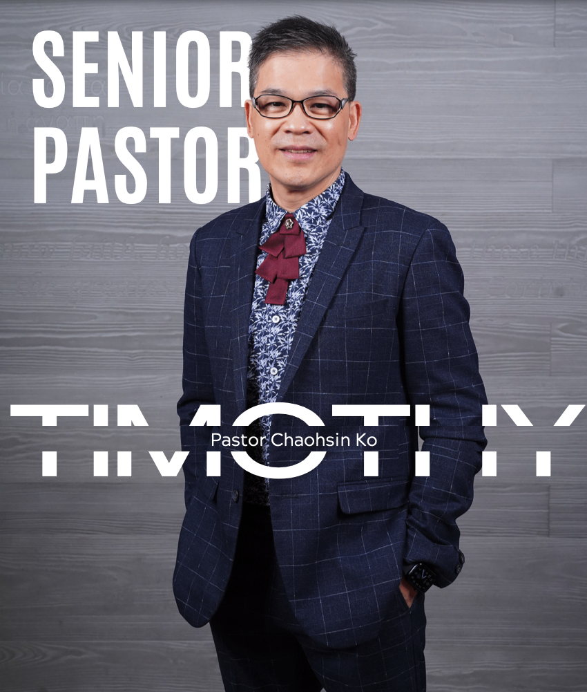

PASTORAL
全職牧養團隊
和平教會目前共有七位全職牧者
兩位牧師（前左至右）——主任牧師葛兆昕牧師、教育牧師翁梵偉牧師。
以及五位傳道（後左至右）——黃興隆傳道、陳冠婷傳道、張仁蕙傳道、鄭韻語傳道、林昌賢傳道。
和平教會目前共有七位全職牧者
兩位牧師（前左至右）——主任牧師葛兆昕牧師、教育牧師翁梵偉牧師。
以及五位傳道（後左至右）——黃興隆傳道、陳冠婷傳道、張仁蕙傳道、鄭韻語傳道、林昌賢傳道。

葛兆昕牧師與陳慧瑟師母共育有一男一女——葛恩霈、葛恩昀。全家一同委身和平教會，參與服事，同心建造教會，成為美好的榜樣與典範。
「至於我和我家，我們必定事奉耶和華。」
約書亞記24:15


主任牧師
兆昕牧師於2012年就任成為屏東和平教會第四任主任牧師。
這十年來，兆昕牧師按著基督對教會的定義與藍圖來建造教會，看重強本外展、門徒訓練、興起領袖，並致力於建造和平教會成為「新世代使徒的育成中心」，在這末後的世代，為主的再來做預備，差遣門徒，在各處建造教會，完成大使命！
兆昕牧師也經常在《我的昕觀點》粉絲專頁和Instagram中，以聖經真理來回應生命與生活中的許多問題， 分享他的觀察與反思，提出許多值得深思的問題，促進大家思考生命重要的議題，並與弟兄姐妹彼此回應與互動。

專責「兒童教會」的牧養與發展。

專責「青少年教會」的牧養與發展。

專責「青年教會」的牧養與發展

專責「職青教會」的牧養與發展。

專責「老神在在」的經營與發展。

專責「視覺傳達團隊」的經營與發展。